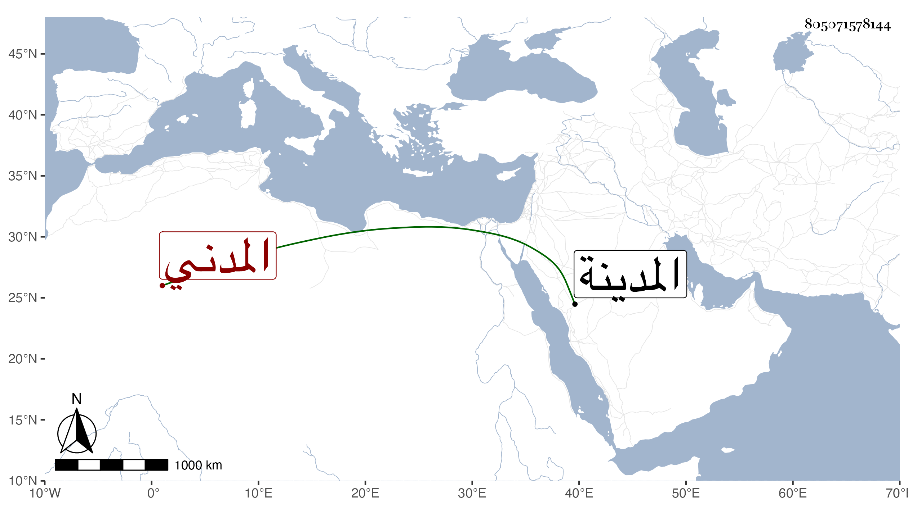

0902Sakhawi.DawLamic.ITO20230111-ara1.EIS1600.805071578144
Biography ID: 805071578144
505
زين الدين بن أبي الفضل بن القاضي عبد الله بن عبد الرحمن بن صالح المدني ممن سمع مني بها وابن محمد بن المحب بن الحسين المدني ابن عم عبد المعطي ومحمد ابني أحمد بن الحسين الماضيين ممن سمع مني بالمدينة والانبابي ممن سمع من شيخنا والتاجر هو أبو بكر بن محمد بن عبد الله بن مقبل . والسخاوي أبو بكر بن عبد الرحمن بن محمد بن أبي بكر أخى بل هو أكثر في تلقيب الوالد من جلال الدين والسطحي القاهري كان مقيما بسطح جامع الحاكم وللناس فيه اعتقاد انقطع ثلاثين سنة لا يخرج من منزله إلا يوم الجمعة للاغتسال ثم يعود مات في سنة أربع وعشرين وكانت جنازته مشهودة قاله شيخنا في انبائه وقال غيره إنه كان مالكي المذهب رافق العز بن عبد السلام الأموي قريب الولوي السنباطي القاضي في الطلب في الفقه وغيره بل حضر عند العز بن جماعة وكان الجلال البلقيني فمن دونه يقصده للسلام وطلب الدعاء رحمه الله وإيانا . والسكندري الحنفي أحد من حضر عند أكمل الدين وجار الله وغيرهما قرأ عليه في الهداية الكمال بن الهمام ونبه على ذلك في أول شرحه لها وقال شيخنا في آخر ترجمة أبي بكر التاجر من أنبائه أنه ناب في الحكم .
